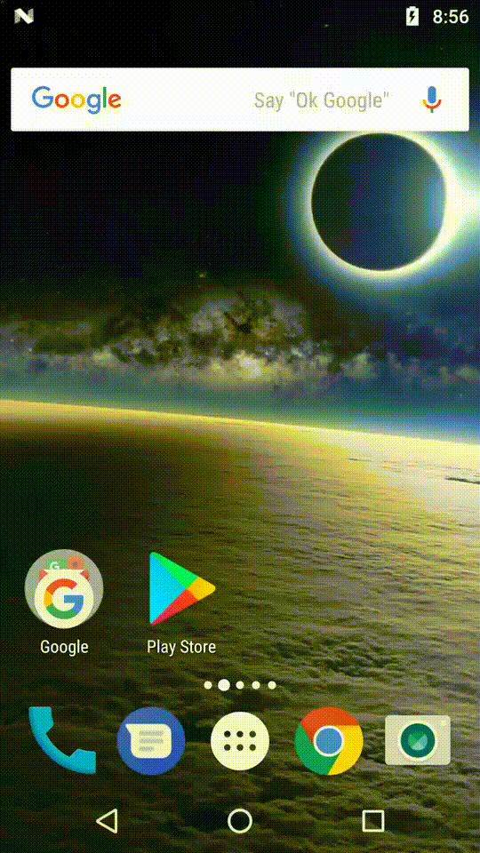

The Rescue In-App Support Android SDK allows your customers to establish a Rescue support session within your app.
Take advantage of In-App Support:
The SDK enables your technician to use the following features with LogMeIn Rescue Technician Console:
Define the location of the SDK maven repository as well as the dependencies by adding the following lines to the build.gradle file of your application module:
repositories {
maven {
url 'https://raw.githubusercontent.com/logmeinrescue/android-sdk/master/maven/repository'
}
}
...
dependencies {
implementation('com.logmein.rescuesdk:resources:3.6.0@aar') {
transitive = false // avoid resources dependencies
}
implementation('com.logmein.rescuesdk:core:3.6.0@aar') {
transitive = true
}
// other SDK modules that your app requires
}This chapter describes the prerequisites of integrating the Rescue Android SDK into a 3rd-party application.
API Level 10 (Gingerbread) or higher is required to compile. Therefore, the embedder app is required to have minSdkVersion=10+.
API Level 16 (Jelly Bean) or higher is required to start sessions.
If your application is running on earlier versions of android, please be aware that the SessionFactory.newInstance() method will throw an Exception, therefore a session cannot be instantiated. Before enabling an element related to Rescue support session, you should check the platform on which your application is running.
private void setUpRescueSessionStartButton() {
// Make sure we're running on supported Android platform to use Rescue SDK APIs
if (Build.VERSION.SDK_INT >= RescueSDK.getMinSupportedAndroidApiLevel()) {
// Setup Rescue related UI components
}
}The minimum API level for the device screen streaming module is API 21.
The SDK is extensively use Java 8 language features that implies the followings:
android {
compileOptions {
sourceCompatibility JavaVersion.VERSION_1_8
targetCompatibility JavaVersion.VERSION_1_8
}
}The SDK is designed to be used with Android Studio, the currently official IDE for developing native Android applications.
Module | Functionality |
core | Session and chat |
camerastreaming | Camera streaming and annotation |
devicescreenstreaming | System wide remote viewing capability and annotation tools. (Excluding SECURE content) The minimum API level for this module is API 21. |
appscreenstreaming | In-app Remote viewing (Including SECURE content) |
deviceinfo | Device diagnostics |
resources | Localized strings for common use-cases of the SDK with rescuesdk_ prefix StringResolver class, which can transform events into human-readable messages Contains translations for the following languages: en, ar, bg, cs, da, de, el, es, es-rAR, et, fa, fi, fr, hr, hu, in, it, iw, ja, ko, lt, lv, my, nb, nl, no, pl, pt, pt-rBR, ro, ru, sk, sl, sr, sv, th, tr, uk, vi, zh, zh-rCN |
During a session, the user might put the embedder application to the background. The SDK reports the background state, so that the technician is notified whenever the user navigates away from the application.
You must use the following snippet in your application's onCreate method:
MyApplication.java
public class MyApplication extends Application {
@Override
public void onCreate() {
super.onCreate();
RescueSDK.initializeLifecycleReporter(this);
}
}The implementation of the screen sharing feature allocates considerable amount of memory, which may cause an OutOfMemoryError in the embedder application. Therefore, the embedder application should add the largeHeap=true attribute to its application tag, in the AndroidManifest.xml.
AndroidManifest.xml
<application android:name=".MyApplication"
android:icon="@drawable/ic_launcher"
android:label="@string/app_name"
android:largeHeap="true"
android:logo="@drawable/logo"
android:theme="@style/AppTheme" >
</application>You must provide the key upon initiating a Rescue session.
Register a Rescue Trial Account to acquire a mobile license.
A 40-character API key is generated for your app.
Ensure the following:
The connection between your application and the Rescue Technician Console is represented in the SDK by a Session object.
When the user of your application requests support, you should first create a Session using the SessionFactory class:
SessionFactory factory = SessionFactory.newInstance();
String apiKey = "YOUR_API_KEY"; //substitute your API key
SessionFactory.SessionCreationCallback callback =
new SessionFactory.SessionCreationCallback() {
@Override
public void onSessionCreated(Session session) {
// The session is now created
}
}
factory.create(getApplicationContext(), apiKey, callback);The SessionFactory.create(...) method takes 3 parameters:
Note that the SessionFactory.create(...) call is asynchronous. It creates a session object in a background thread, and invokes the supplied callback once the instance is created. The callback is invoked in the main thread.
By calling SessionConfig.setCustomerName(String name), you let the Technician see the customer name associated with the session even before picking up the session. SessionConfig.setCustomerName(...) only works if it was invoked before creating a SessionConfig object. Note: Despite the function being static, it only works using one of the channel-based approaches, but does not work using the pin-based one. The default value of customer name is "Customer".
After the session instance is created, the embedder application can start the session using Session.connect(SessionConfig) method.
This method takes a SessionConfig object, which can be created using the static factory methods of the class.
SessionConfig methods | Functionality |
| This method takes a PIN code which is a unique 6-digit code that can be generated by a technician in the Rescue Technician Console. |
| This method takes a string parameter, which is the Channel ID |
| This method takes the Channel Name and the Company ID |
| This method takes the Customer Name |
//Uncomment the below line if you want to set the customer name
//SessionConfig.setCustomerName("YOUR CUSTOMER NAME"); //Only works, if it was invoked before creating a SessionConfig object
SessionConfig sessionConfig = ...;
session.connect(sessionConfig);The SDK facilitates the event bus pattern in order to notify the embedder application about status updates during the session.
To get familiar with the eventBus pattern, consider reading the guava paper.
Once the Session object has been created, you can ask for the event bus interface right away from the Session class.
EventDispatcher bus = session.getEventBus();In order to receive updates, you must implement your own handler class and add it to the event bus.
For example, if you want to receive ConnectedEvents, first you have to define an event handler method with the @Subscribe annotation:
public class YourHandler {
@Subscribe
public void onConnected(ConnectedEvent event) {
Log.d("SDK", "We are now connected!");
}
}The handler methods must satisfy the following requirements:
@Subscribe (com.logmein.rescuesdk.api.eventbus.Subscribe)The name of the handler method can be anything, it is not used by the SDK.
After creating the event handler, you must register it with the event bus using the add method:
YourHandler yourHandler = new YourHandler();
bus.add(yourHandler);After your handler is registered, it will receive all those event types (or any subclass of those events) that it is subscribed to.
If you no longer want to receive events with your event handler, you can remove the handler from the event bus with:
bus.remove(yourHandler);The eventBus implementation we use offers a concise way to eliminate stateful subscribers, by introducing the definition of Producers.
When a subscriber is registered through the EventDispatcher.add() method, it will receive the last Event that has been dispatched with that type, or any subclass of that type.
This can be useful, for example, when recovering your application from a background state.
Your app does not need to save the status of the connection, because upon registering to a ConnectionEvent, the handler of that event will be invoked immediately, so that the actual state will be propagated without the need to query it.
The Session goes through different states during its life cycle. After a session is initiated from your application, it connects to LogMeIn servers and appears in the session queue of those technicians that are assigned to the channel with which the session was created.
When the Session's state changes, the SDK publishes an event from the following hierarchy of event classes in the com.logmein.rescuesdk.api.session.event package.
Event | Description |
| Base class of all session status events. |
| Base class for events indicating an active connection |
| The application is successfully connected to a technician, and they started the session in their queue. |
| Base class for events indicating an inactive connection |
| The application started to connect to LogMeIn servers. |
| The session started to close. |
| The technician started to close the session. |
| The application user started to close the session. |
| The closing of the session is finished. This is the last status change event related to this session. No more interaction is possible with the session. |
| The session has been closed because it failed to reconnect to the Technician Console for too long. |
| The session has appeared in the queue of one or more technicians but they haven't started it yet. |
| The session is being transferred from one technician to another. |
| The technician has put the session on hold. |
| The technician has closed the Technician Console. The session does not close in this case, it will be resumed whenever the technician restarts the Technician Console. |
| The Technician Console lost network connectivity. The session will resume if the network is restored on the technician's side. |
| The application has lost network connectivity. The session will resume if the network is restored on the application's side. |
| The session failed to connect to a technician due to an error. To resolve the exact cause of the issue, please refer to the related chapter. |
Once the support session has been established, the parties can exchange text messages.
To gain better understanding of the system, consider the following class hierarchy:
The SDK offers different types of ChatMessageEvents. These are dispatched in the following cases:
Event | Description |
| Embedder sends message to the technician |
| Message arrived from the technician |
To send a chat message, the client app needs a ChatClient object. You can acquire such object by subscribing to the ChatConnected event.
You can access the ChatClient object by calling the getChatClient() method on the event.
The ChatClient object obtained this way is only valid until a ChatDisconnectedEvent is received.
public class YourHandler {
@Subscribe
public void onChatConnected(ChatConnectedEvent event) {
ChatClient client = event.getChatClient();
client.sendMessage("Hey Mr Technician!");
}
}You can send a message to the technician, by calling the sendMessage() method on the ChatClient object, with any string parameter.
To receive messages from the technician, the client app has to register a handler of RemoteChatMessageEvent.
public class YourHandler {
@Subscribe
public void onRemoteChatMessage(RemoteChatMessageEvent event) {
StringBuilder messageBuilder = new StringBuilder();
Date date = new Date(event.getTime());
String timeOfArrival = new SimpleDateFormat("HH:mm:ss", Locale.getDefault()).format(date);
messageBuilder.append("[").append(timeOfArrival).append("]");
messageBuilder.append("-").append(event.getMessage());
Log.d("SDK", messageBuilder.toString());
}
}Note that by subscribing to the generic ChatMessageEvent class you will receive all subclasses of these events, including the local and remote messages as well.
Your application should indicate when your user is typing a chat message as follows:
ChatClient.sendTyping()The client app may call this method repeatedly. The typing notification appears in the Technician Console, and it is reset a few seconds after the last call to this method.
Subscribe to the TechnicianTypingEvent, so your application is notified when the technician is typing:
@Subscribe
public void onRemoteTyping(TechnicianTypingEvent event) {
Log.d("SDK", "typing...");
}Technicians can send an URL to be displayed to the user. Your application can get the sent URL as follows:
@Subscribe
public void onUrlReceived(UrlMessageEvent event) {
Log.d("SDK", "got url:"+event.getUrl());
}When a session is established using the Rescue SDK, the contents of the embedder application's root view can be shared with the technician.
build.gradle (App)
dependencies {
...
implementation('com.logmein.rescuesdk:appscreenstreaming:3.6.0@aar') {
transitive = true
}
...
}Before creating a Session, tell the SessionFactory that it should use AppScreenStreamingExtension.
Activity.java (snippet)
SessionFactory sessionFactory = SessionFactory.newInstance();
sessionFactory.useExtension(AppScreenStreamingExtension.class);
sessionFactory.create(...);The screen sharing may start automatically depending on settings on the technician's side. If the embedder application stops screen sharing, it can be restarted by the technician at any time during the session.
When the application is not in the foreground, the device view is not updated on the technician's side.
The embedder application can receive updates about the current status of screen sharing by subscribing to the related events. Consider the following class hierarchy:
Event | Description |
| The device view is visible for the technician |
| The device view is no longer visible for the technician |
| The display stream has been paused by the embedder app |
| The display stream has been resumed by the embedder app |
The embedding application can obtain an instance of StreamingClient from an instance of DisplayStreamingStartedEvent.
Screen sharing can be paused and resumed by calling StreamingClient.pause() and StreamingClient.resume(), respectively. Screen sharing may be stopped by calling StreamingClient.stop().
During a support session, the technician might encounter certain situations, when pointing the user in the right direction is necessary. The whiteboard (and laserpointer) tool is a drawing tool the technician can use to annotate on the device's screen.
When the user puts the embedder app in the background, the drawings will not be visible anymore.
When a session is established using the Rescue SDK, the contents of the embedder application's root view can be remotely controlled by the technician.
build.gradle (App)
dependencies {
...
implementation('com.logmein.rescuesdk:appscreenstreaming:3.6.0@aar') {
transitive = true
}
...
}Before creating a Session, tell the SessionFactory that it should use AppScreenControlExtension.
Activity.java (snippet)
SessionFactory sessionFactory = SessionFactory.newInstance();
sessionFactory.useExtension(AppScreenControlExtension.class);
sessionFactory.create(...);When the application is not in the foreground, the device view is not updated on the technician's side so it cannot be controlled.
Event | Description |
| The application control is available for the technician |
| The application control is no longer available for the technician |
| The application control has been paused by the embedder app |
| The application control has been resumed by the embedder app |
The embedding application can obtain an instance of StreamingClient from an instance of RemoteDisplayControlStartedEvent.
Device screen sharing enables the technician to see everything (except secure windows) on the screen of the user's device.
It provides the same functionality as the app screen streaming, including whiteboarding, laserpointer, start/stop events and such.
When the technician wants to start a remote viewing session, and the app is in foreground, then the following dialog is displayed to the user.
If the user consents to this dialog, then the remote viewing will starts right away.

build.gradle (App)
dependencies {
...
implementation('com.logmein.rescuesdk:devicescreenstreaming:3.6.0@aar') {
transitive = true
}
...
}Before creating a Session, tell the SessionFactory that it should use DeviceScreenStreamingExtension.
Activity.java (snippet)
SessionFactory sessionFactory = SessionFactory.newInstance();
sessionFactory.useExtension(DeviceScreenStreamingExtension.class);
sessionFactory.create(...);MediaProjection
The SDK uses MediaProjection API to capture screen contents.
Because of this if you set targetSdkVersion to 29 or greater then you have to implement your own Service class and run as foreground service.
Inside your AndroidManifest.xml:
<uses-permission android:name="android.permission.FOREGROUND_SERVICE" />
<application>
<service
android:name="YourOwnService"
android:exported="false"
android:foregroundServiceType="mediaProjection" />
</application>The session creation needs to be done inside your Service class implementation. Before this you have to call the startForeground() method.
startForeground(YOUR_NOTIFICATION_ID, notification);
SessionFactory sessionFactory = SessionFactory.newInstance();
sessionFactory.useExtension(DeviceScreenStreamingExtension.class);
sessionFactory.create(...);The SDK can be used to stream the camera image of the device to the Technician Console. This way the technician can see what the user sees through the camera of the device.
You can enable camera streaming in the SDK with the following steps. Please check the Permission Handling step to avoid difficulties.
Declare the camerastreaming library in your dependencies section:
build.gradle (App)
dependencies {
...
implementation('com.logmein.rescuesdk:camerastreaming:3.6.0@aar') {
transitive = true
}
...
}Before creating a Session, tell the SessionFactory that it should use CameraStreamingExtension.
Activity.java (snippet)
SessionFactory sessionFactory = SessionFactory.newInstance();
sessionFactory.useExtension(CameraStreamingExtension.class);
sessionFactory.create(...);After the session is passed back to your app in the onSessionCreated callback, you can obtain the camera streaming extension.
Activity.java (snippet)
CameraStreamingExtension extension = rescueSession.getExtension(CameraStreamingExtension.class);You can use the CameraStreamView class to show the camera image to the user so they can see what is streamed to the technician. To use it, place it in your layout as follows.
Layout.xml (snippet)
<com.logmein.rescuesdk.api.ext.CameraStreamView
android:id="@+id/camera_stream_view"
android:layout_width="match_parent"
android:layout_height="match_parent" />Get a reference to the CameraStreamView, and start to render the camera image to it:
Activity.java (snippet)
CameraStreamView cameraStreamView = (CameraStreamView) findViewById(R.id.camera_stream_view);
extension.startRendering(cameraStreamView);If you enabled camera streaming when creating a Session, the stream starts automatically when the Session is connected to a technician. (regardless of whether you implemented rendering in your app)
When the application is not in the foreground, the camera image is not sent to the technician.
The embedder application can receive updates about the current status of the camera stream, by subscribing to related events:
Event | Description |
| The camera stream started |
| The camera stream stopped |
| The camera stream has been paused by the embedder app |
| The camera stream has been resumed by the embedder app |
The embedding application can control the camera stream with the StreamingClient object, which can be obtained from an instance of CameraStreamingStartedEvent.
The camera stream can be paused and resumed by calling StreamingClient.pause() and StreamingClient.resume(), respectively.
The technician can use the whiteboard tool in the Technician Console with a camera stream. The contents of the whiteboard will follow the movement of the camera image. This feature will work out-of-the-box, when using the provided CameraStreamView.
The technician can "freeze" the camera stream, which means a snapshot of the current camera image will be shown at both sides of the stream until it is "unfrozen".
Related events: StreamingFrozenEvent, StreamingUnfrozenEvent
Once, you obtained the extension instance, you can control the device's flashlight with it. Controlling the flashlight is only enabled when the camera stream is active.
Turn on the flashlight with:
extension.flashOn()Turn off the flashlight with:
extension.flashOff()Once the flashlight's status is changed, the SDK dispatches a FlashlightTurnedOn or a FlashlightTurnedOff event about it.
Some devices might not have a flashlight. In order to gracefully handle this case, you should subscribe to the FlashlightAvailable and the FlashlightUnavailable events, and enable the related UI components according to these.
These events also let you know when you can call the flashlight controlling methods.
Currently the audio streaming functionality only works with the camera streaming module.
To enable audio streaming during camera streaming sessions, use the related extension:
Activity.java (snippet)
SessionFactory sessionFactory = SessionFactory.newInstance();
sessionFactory.useExtension(AudioStreamingExtension.class);
sessionFactory.create(...);After the session is passed back to your app in the onSessionCreated callback, you can obtain the camera streaming extension.
Activity.java (snippet)
AudioStreamingExtension extension = rescueSession.getExtension(AudioStreamingExtension.class);
extension.muteRecording();
extension.unmuteRecording();The extension provides methods to enable/disable the sending of the user microphone input for the embedder.
After your application is done with the support session, it is able to close the session, by calling
session.disconnect().
After this, you receive a DisconnectingEvent. When the disconnecting has been finished, a DisconnectedEvent is received indicating that the session is no longer functional.
If you wish to create a new support session, you must create a new session instance.
The session can be also disconnected by the technician, in which case, you receive the described events.
The rescue infrastructure can be configured to send arbitrary URLs at the end of each session to record customer satisfaction with a survey. To obtain the survey URL, use the DisconnectedEvent's related property:
@Subscribe
public void onDisconnected(DisconnectedEvent event) {
String surveyUrl = event.getCustomerSurveyUrl();
Log.d("SDK", "Survey url: "+e.getCustomerSurveyUrl());
// TODO open survey url with default browser
}The permissions requested by the Rescue SDK are listed in the following table:
| Declaring module | Needed for... | Requester |
| core | Essential functionality | None |
| camerastreaming | Camera streaming | Embedder |
| camerastreaming | VoIP during camera sessions | Embedder |
| deviceinfo | Device diagnostics | SDK |
| devicescreenstreaming | System-wide whiteboard and laser pointer functionality | SDK |
Please note that when using gradle and the official android plugin you do not have to add these permissions to your application's manifest, because the build tool merges these from the corresponding SDK modules.
The notification that is displayed by the SDK can be fully customized. To set up a customized notification, use the following code block:
RescueSDK.customizePermissionNotification(new NotificationCustomizer() {
@Override
public void onCreateNotification(CustomizedNotificationBuilder builder) {
// Optional: Set the activity to be instantiated
// when the user clicks the notification
builder.setActivityToBeStarted(MainActivity.class);
}
});The CustomizedNotificationBuilder class is a subclass of the Notification.Builder class from the android framework, and acts as such. However, setting the ContentIntent of this builder will have no effect, because the SDK will overwrite that, in order to guarantee normal operation of the permission consent dialogs.
The notification has a certain timeout, and is removed automatically when that time is over.
The SDK comes with a set of consumer proguard files, which are automatically picked up by the gradle build system. This means that there is no need for additional configuration when obfuscating the embedder app.
The SDK may store session-related information using shared preferences. All preferences are stored using the com.logmein.rescuesdk prefix. In order to use the full SDK functionality, the embedder application should not interfere with these values.
We provide an example app along with the SDK, that demonstrates the features of the SDK.
$ git clone git@github.com:LogmeinRescue/Android-SDK-DemoApp.git
The example app should run out-of-the-box, but you must enter a Channel ID and an API key manually when connecting to a session.
You can configure the Channel ID using the Config class corresponding field.
Our SDK uses the SLF4J library for logging purposes. By default, no implementation is bound, so the library does not log any messages.
In order to receive log messages from the SDK, the embedder app must define an SLF4J implementation at compile time.
The reference implementation of the SLF4J library for Android is available here.
To bind it, add this line to the build.gradle file of the application:
implementation 'org.slf4j:slf4j-android:1.7.12'After an implementation is bound, you receive log messages through the logger interface with Rescue-SDK prefix.
By default, this implementation ignores DEBUG and VERBOSE level log messages. You can change the default level by setting a system property:
adb shell setprop log.tag.Rescue-SDK <LEVEL>
Where level is either VERBOSE, DEBUG, INFO, WARN, ERROR, ASSERT, or SUPPRESS. SUPPRESS turns off all logging for the SDK tag.
When the SDK encounters an unrecoverable error during its execution, it dispatches an instance of ErrorEvent.
In order to further identify the cause of the error, it is possible for the embedder application to subscribe to subclasses of these events:
Event | Meaning |
| The given api key and package name is not associated with the target company. |
| The api key is disabled according to the Rescue system. |
| The api key does not exist |
| Indicates that the given PIN code for a private session is expired. |
| Indicates that the given PIN code for a private session is not valid. |
| No Channel can be found with the defined parameters. It may have been deleted, or renamed |
| The given companyId is not associated with any company. |
| No technician is available on the selected Channel |
| The given API key is not associated with the company that this Channel belongs to. |
| Indicates that the given PIN code for a private session was not generated with the account that holds the API key used to initialize the SDK. |
| Indicates that the LogMeIn Rescue website did not receive the APIkey. |
| Indicates that the LogMeIn Rescue website did not receive the package name. |
| Indicates that the used protocol version is not supported by the Rescue infrastructure any more. |
UnsupportedOperationException will be thrownRescueSDK.initializeLifecycleReporter() in your application's onCreate() methodcom.logmein.rescuesdk.api.deviceinfo package has been moved to the deviceinfo moduleUnsupportedVersionEvent during session connectionRescueSDK.customizePermissionNotification() addedDisplayStreamingExtension is now Deprecated in favor of AppScreenStreamingExtensionSessionFactory.useExtension(DisplayStreamingExtension.class); orSessionFactory.useExtension(CameraStreamingExtension.class); com.logmein.rescuesdk.api.remoteview has been moved to com.logmein.rescuesdk.api.streamingcom.logmein.rescuesdk.api.streaming package has been moved from the core module into the displaystreaming and camerastreaming moduleIssue | Solution |
The keyboard is not displayed in Display View in the Technician Console (in case of using appscreenstreaming module) | System UI components cannot be captured, therefore, are not visible in the TC. |
| Ensure that you call |
"Unable to create Rescue session" | You have likely added incompatibile modules to your sessionFactory. Please ensure that there are only compatible modules added. |